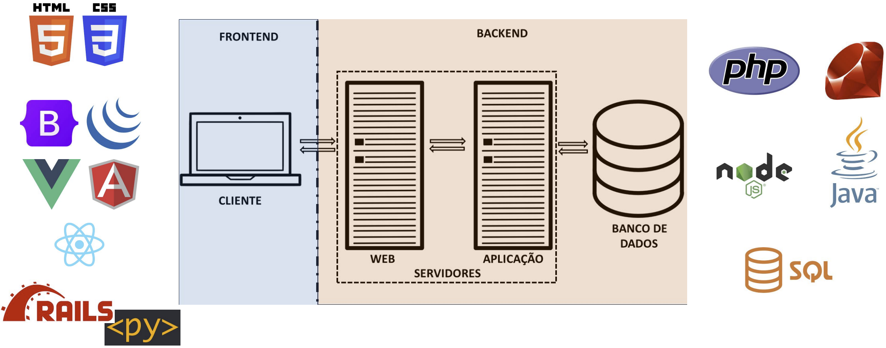

Disciplinas
TÉCNICAS AVANÇADAS DE DESENVOLVIMENTO DE SOFTWARE-T01-2024-2 Concluído
Materiais
Vídeo 1 - [UFMS Digital] Técnicas Avançadas de Desenvolvimento de Software - Módulo 1 - Unidade 2 - Linguagem de Programação Web sendProf° ministrante: Luciano Édipo Pereira da Silva
Conteúdo
- Evolução do Desenvolvimento Web
- Histórico e tendências recentes no desenvolvimento web
- Introdução ao JavaScript
- Manipulação avançada do DOM com JavaScript
- Introdução ao JQuery
- Introdução ao Node.js e seu ecossistema
- Frameworks front-end - React, Angular, Vue.js
Histórico e tendências recentes no desenvolvimento web
- JAMstack
- Serverless Architecture
- Progressive Web Apps (PWAs)
- Inteligência Artificial (IA) e Machine Learning (ML)
- WebAssembly (Wasm)
- API-First Development
- GraphQL
- Arquiteturas de Microsserviços
- Responsividade e Design Mobile-First
- Segurança Embarcada
Introdução ao JavaScript
- Linguagem de Script do Lado do Cliente
- Sintaxe Simples e Flexível
- Manipulação do DOM
- Variáveis e Tipos de Dados
- Funções e Controle de Fluxo
- Gestão de Eventos
- Integração com HTML e CSS
- Ecossistema de Bibliotecas e Frameworks
Frameworks

Manipulação avançada do DOM com JavaScript
Introdução ao JQuery
- JS:LIB
- Manipulação de Eventos
- Dev em 2006 por John Resig
- Abstração de complexidade de JS e Navegadores
- Compatibilidade com navegadores
- Seleção de Elementos: $( )
- Manipulação de Conteúdo: append( ), prepend( ), html( ),...
- Manipulação de Eventos: clique, mouseover, teclas pressionadas e …
- Animações: fadeIn( ), fadeOut( ), slideDown( ), …
- Requisições AJAX
AJAX
- Asynchronous JavaScript and XML (JavaScript e XML Assíncronos)
- XMLHttpRequest
- Manipulação das Respostas
- Eventos: onload, onerror, onprogress
- Manipulação da árvore DOM
Código Exemplo
(fazer download)
<script>
function consultarCEP() {
// Obtenha o valor do CEP inserido pelo usuário
var cep document.getElementById('cep').value;
// Verifique se o CEP possui o formato adequado (opcional, dependendo do seu caso)
var cepPattern /^\d(8)$/;
If (IcepPattern.test(cep)) {
alert("Formato de CEP inválido. Insira um CEP válido com 8 digitos.");
return;
}
// Construa a URL da API de consulta de CEP (substitua pela API real que você utilizará)
var apiurl https://viacep.com.br/ws/$(cep)/json/;
// Crie uma instância do objeto XMLHttpRequest
var xhr new XMLHttpRequest();
// Configure a função de callback para lidar com a resposta da requisição
xhr.onload function() {
if (xhr.status 200) {
// Parse da resposta JS0N
var endereco JSON.parse(xhr.responseText);
// Preencha os campos de endereço na página
document.getElementById('logradouro").textContent = `Logradouro: ${endereco.logradouro}`;
document.getElementById('bairro').textContent = `Bairro: $(endereco.bairro)`;
document.getElementById('cidade').textContent = `Cidade: $(endereco.localidade)`;
document.getElementById('estado').textContent = `Estado: $(endereco.uf)`;
} else {
alert("Erro ao consultar o CEP. Por favor, tente novamente mais tarde.");
};
}
// Configure o método e a URL da requisição
xhr.open('GET', apiurl, true);
// Envie a requisição
xhr.send();
<script>
https://drive.google.com/file/d/1He0ohNaVMyxEZ6sbkQKrDfuwATyhNNx0/view
Introdução ao Node.js
- JS no lado Servidor
- Motor V8 do Google
- Assincronismo e Event-Driven
- Gerenciador de Pacotes NPM
- Criação de Servidores Web
- Frameworks Populares
- Aplicações Full-Stack
- Suporte à Programação JavaScript Moderna
- Instalação do Node.js -> https://nodejs.org/
- Criação de um Projeto Node.js -> npm init
- Instalação de Dependências -> package.json
- Criação de um Arquivo de Aplicação -> app.js
- Desenvolvimento com Node.js
- Execução da Aplicação -> node app.js
- Explorando o Ecos do Node.js -> https://www.npmjs.com/
- Aprofundamento Específicos: Arquivos, Segurança, BD e …
// Importando o módulo express
const express = require('express');
// Criando uma instância do express
const app = express();
// Rota principal
app.get('/', (req, res) => {
res.send('Bem-vindo à minha aplicação Node.js!');
});
// Definindo a porta para o servidor escutar
const port = 3000;
// Iniciando o servidor na porta especificada
app.listen(port, () => {
console.log(Servidor Node.js está rodando em http://localhost:$(port)});
});
Frameworks front-end - React, Angular, Vue.js
React: Flexibilidade, eficiência e uma comunidade grande e ativa. Ótimo para interfaces de usuário dinâmicas e componentes reutilizáveis.
Angular: Framework completo com uma ampla gama de recursos. Bem adaptado para aplicações empresariais complexas e projetos de grande escala.
Vue.js: Simplicidade e facilidade de integração. Uma excelente escolha para projetos menores ou para desenvolvedores que estão começando no desenvolvimento front-end.
Estudo de caso: TaskHub
Desenvolva um sistema web simples para gerenciamento de tarefas:
- Cadastro de tarefas
- Listagem de tarefas
- Marcar tarefas como concluídas
- Excluir tarefas **
- Editar tarefas **